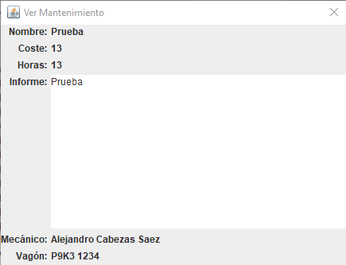

Para poder ver los datos de un campo deberemos pulsar en el botón "Ver". Una vez pulsado,
nos saldrá la pantalla que veremos en la imagen de abajo.
En dicha imagen (al pulsar el botón en un campo de "Mantenimiento"), podremos ver todos los datos que contenía dicho
campo.
Para cerrar dicha ventana simplemente deberemos pulsar en el botón con la "X".
